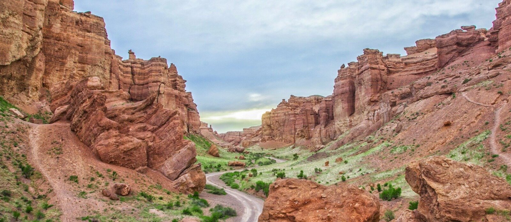

Прогулка по каньону
Бывали когда-нибудь в широких горных каньонах? А в Казахстане вы сможете лицезретьодин из этих величественных природных объектов.
 Единство ради развития
Единство ради развития

Прогулка по каньону
Бывали когда-нибудь в широких горных каньонах? А в Казахстане вы сможете лицезреть